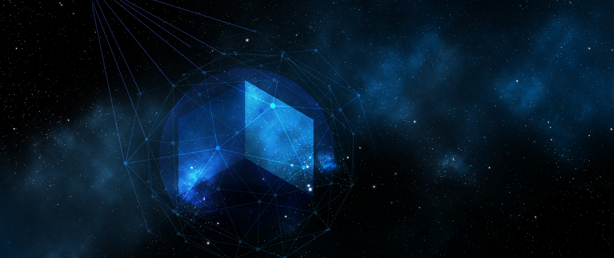

<ion-toolbar>
  <ion-buttons slot="start">
    <ion-menu-button size="small" autoHide="true"></ion-menu-button>
  </ion-buttons>
</ion-toolbar>

<ion-content scrollX="false" scrollY="false">
<!--  -->

  <div class="content-wrapper">
    <div class="header no-border has-toolbar">
      <div class="title">
        {{ 'feed-component.title' | translate }}
      </div>
      <div class="options">
        <ion-button fill="clear" size="small" color="medium" (click)="openSearch = !openSearch">
          <ion-icon mode="md" name="search"></ion-icon>
        </ion-button>
        <ion-button fill="clear" size="small" color="medium" (click)="addPost()">
          <ion-icon mode="md" name="add"></ion-icon>
        </ion-button>
      </div>
    </div>

    <app-tab-menu [tabs]="views" (event)="view = $event"></app-tab-menu>
    <app-search-bar *ngIf="openSearch" (event)="onSearch($event)"></app-search-bar>

    <div class="wrapper">
      <div class="content-scroll" #content>
        <ng-container [ngSwitch]="view">
          <ng-container *ngSwitchCase="1">
            <feed-minimal *ngFor="let item of feed" [feed]="item" (event)="manage($event)"> </feed-minimal>
          </ng-container>
          <ng-container *ngSwitchCase="2">
            <feed-timeline *ngFor="let item of feed" [feed]="item" (event)="manage($event)"> </feed-timeline>
          </ng-container>
          <ng-container *ngSwitchCase="3">
            <feed-showcase *ngFor="let item of feed" [feed]="item" (event)="manage($event)"> </feed-showcase>
          </ng-container>
          <ng-container *ngSwitchCase="4">
            <feed-modern *ngFor="let item of feed" [feed]="item" (event)="manage($event)"> </feed-modern>
          </ng-container>
          <ng-container *ngSwitchDefault>
            <feed-minimal *ngFor="let item of feed" [feed]="item" (event)="manage($event)"> </feed-minimal>
          </ng-container>
        </ng-container>
      </div>
    </div>
  </div>
</ion-content>


<ion-footer>
  
  <ion-tab-bar slot="bottom">
    <ion-tab-button tab="schedule" (click)="goto(routes.dashboard)">
      <ion-icon src="../../../../assets/icons/calendar.svg"></ion-icon>
      <ion-label>{{ 'page-title.dashboard' | translate }}</ion-label>
    </ion-tab-button>
    
    <ion-tab-button tab="news" (click)="goto(routes.feed)">
      <ion-icon src="../../../../assets/icons/rss.svg"></ion-icon>
      <ion-label>{{ 'page-title.news' | translate }}</ion-label>
    </ion-tab-button>

    <ion-tab-button tab="people" (click)="goto(routes.people)">
      <ion-icon src="../../../../assets/icons/users.svg"></ion-icon>
      <ion-label>{{ 'page-title.people' | translate }}</ion-label>
    </ion-tab-button>

    <ion-tab-button tab="about" (click)="goto(routes.messages)">
      <ion-icon src="../../../../assets/icons/message-square.svg"></ion-icon>
      <ion-label>{{ 'page-title.chat' | translate }}</ion-label>
    </ion-tab-button>

    <ion-tab-button tab="about" (click)="goto(routes.setting)">
      <ion-icon src="../../../../assets/icons/settings.svg" ></ion-icon>
      <ion-label>{{ 'page-title.setting' | translate }}</ion-label>
    </ion-tab-button>
  </ion-tab-bar>

</ion-footer>